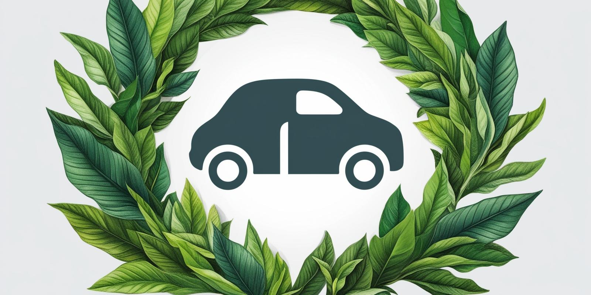
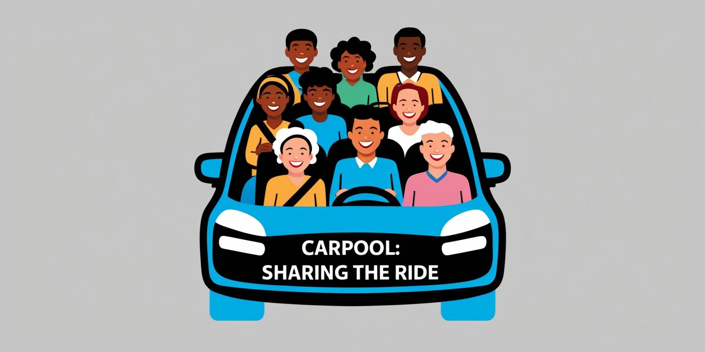

About Us
The University Carpooling Service is an initiative by J.C. Bose University to make commuting easier, more affordable, and environmentally friendly for students and staff. By connecting drivers and passengers within the university community, we aim to reduce transportation costs, build connections, and lower our carbon footprint.

Carpooling is not only about convenience; it is also a step towards a greener planet. By sharing rides, we decrease the number of vehicles on the road, reducing air pollution, traffic congestion, and fuel consumption. Through carpooling, we actively contribute to a sustainable environment and create a culture of environmental responsibility within our university.
This service encourages students and staff to adopt sustainable travel practices, leading to improved air quality and fewer greenhouse gas emissions. It’s a simple yet impactful way to make a difference.
How It Benefits University Students
- Helps save on travel costs by sharing expenses with fellow students.
- Provides a convenient and safe travel option within the university network.
- Supports sustainable transportation by reducing the number of individual vehicles.
- Offers an opportunity to meet and connect with peers, fostering a stronger campus community.

Share your journey with friends and classmates.
Our Mission
Our mission is to provide a secure, accessible, and eco-friendly carpooling platform that supports university members in their daily commute. We are dedicated to building a collaborative environment that values sustainability, reduces travel stress, and fosters lasting relationships within the campus community.
Our Vision
We envision a campus where shared rides are the norm, contributing to reduced carbon emissions and a healthier planet. Through our platform, we hope to set a precedent for other institutions to adopt green practices, creating a network of carpooling services across educational institutions nationwide.